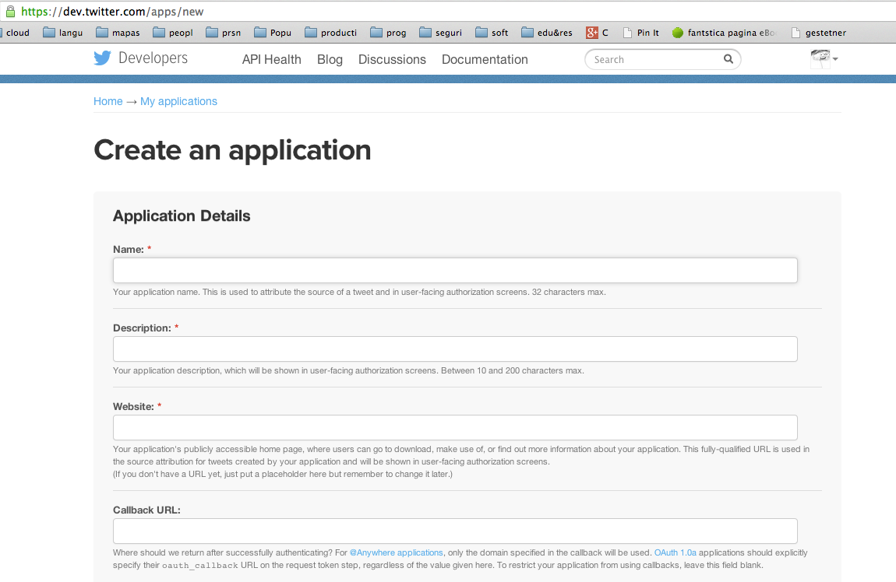

Siguiente: Práctica: Contar la Popularidad Subir: Introduccion Anterior: Averiguando que tiempo hace Índice General Índice de Materias
[~/src/ruby/rubytesting/twitter/twitter-test(master)]$ git remote -v bb ssh://git@bitbucket.org/casiano/twitter-test.git (fetch) bb ssh://git@bitbucket.org/casiano/twitter-test.git (push) origin git@github.com:crguezl/twitter-test.git (fetch) origin git@github.com:crguezl/twitter-test.git (push)
[~/src/ruby/rubytesting/twitter/twitter-test(master)]$ pwd -P /Users/casiano/local/src/ruby/rubytesting/twitter/twitter-test [~/src/ruby/rubytesting/twitter/twitter-test(master)]$ date martes, 2 de septiembre de 2014, 12:44:00 WEST
[~/src/ruby/rubytesting/twitter/twitter-test(master)]$ cat README.md Testing twitter ============== See: * http://sferik.github.io/twitter/ * Register your application in twitter: https://dev.twitter.com/apps/new * http://www.vogella.com/articles/Git/article.html Once you have registered your application in twitter fill `configure.rb.template` with your [Oauth](http://blog.varonis.com/introduction-to-oauth/) data and rename it to `configure.rb`Para saber más del formato Markdown:
[~/src/ruby/rubytesting/twitter/twitter-test(master)]$ ruby -v ruby 2.1.2p95 (2014-05-08 revision 45877) [x86_64-darwin13.0] [~/src/ruby/rubytesting/twitter/twitter-test(master)]$ cat .ruby-version 2.1.2 [~/src/ruby/rubytesting/twitter/twitter-test(master)]$ bundle install Fetching gem metadata from https://rubygems.org/......... Installing multipart-post 1.2.0 Installing faraday 0.8.8 Installing multi_json 1.8.0 Installing simple_oauth 0.2.0 Installing twitter 4.8.1 Using bundler 1.6.2 Your bundle is complete! Use `bundle show [gemname]` to see where a bundled gem is installed. [~/src/ruby/rubytesting/twitter/twitter-test(master)]$ ruby twitt.rb Username : timoreilly Name : Tim O'Reilly Followers : 1791686 Friends : 1238 Location : Sebastopol, CA URL : http://t.co/5086iX7oyT Verified : true Tweet text : @matunos @jamesoreilly @TheEconomist True enough. Tweet time : 2014-09-02 04:39:14 +0100 Tweet ID : 506647513076482049

Con este fichero determinamos con que version del intérprete Ruby se trabaja en este proyecto (Véase la sección 73.7):
[~/local/src/ruby/rubytesting/twitter(master)]$ cat .ruby-version 2.0.0-p247
El fichero Gemfile es usado en conjunción con Bundler para informar de que gemas depende nuestra aplicación (véase 84):
[~/local/src/ruby/rubytesting/twitter(master)]$ cat Gemfile source 'https://rubygems.org' gem 'faraday', '0.8.7' gem 'twitter'El comando
bundle install instala las gemas que figuran en el Gemfile
y sus dependencias:
[~/local/src/ruby/rubytesting/twitter(master)]$ bundle install ERROR: Gem bundler is not installed, run `gem install bundler` first.Vemos que
bundler no esta instalado. Procedemos mediante
gem a instalarlo
(sección 75):
[~/local/src/ruby/rubytesting/twitter(master)]$ gem install bundler Fetching: bundler-1.3.5.gem (100%) Successfully installed bundler-1.3.5 1 gem installed
Ahora si, instalamos las gemas con bundle install
(véase 84):
[~/local/src/ruby/rubytesting/twitter(master)]$ bundle install Fetching gem metadata from https://rubygems.org/......... Fetching gem metadata from https://rubygems.org/.. Installing multipart-post (1.2.0) Installing faraday (0.8.7) Installing multi_json (1.8.0) Installing simple_oauth (0.2.0) Installing twitter (4.8.1) Using bundler (1.3.5) Your bundle is complete! Use `bundle show [gemname]` to see where a bundled gem is installed. [~/local/src/ruby/rubytesting/twitter(master)]$
[~/local/src/ruby/rubytesting/twitter-test(master)]$ gem search 'faraday$' -r -a *** REMOTE GEMS *** faraday (0.8.8, 0.8.7, 0.8.6, 0.8.5, 0.8.4, 0.8.2, 0.8.1, 0.8.0, 0.7.6, 0.7.5, 0.7.4, 0.7.3, 0.7.2, 0.7.1, 0.7.0, 0.6.1, 0.6.0, 0.5.7, 0.5.6, 0.5.5, 0.5.4, 0.5.3, 0.5.2, 0.5.1, 0.5.0, 0.4.6, 0.4.5, 0.4.4, 0.4.3, 0.4.2, 0.4.1, 0.4.0, 0.3.1, 0.3.0, 0.2.4, 0.2.3, 0.2.2, 0.2.1, 0.2.0, 0.1.2, 0.1.1, 0.1.0, 0.0.2, 0.0.1)
[~/local/src/ruby/rubytesting/twitter(master)]$ tree . |--- Gemfile |--- Gemfile.lock |--- README.md |--- configure.rb `--- twitt.rb 0 directories, 6 files
[~/local/src/ruby/rubytesting/twitter-test(master)]$ cat twitt.rb
require 'twitter'
require './configure'
screen_name = ARGV[0] || 'timoreilly'
a_user = Twitter.user(screen_name)
puts "Username : #{a_user.screen_name}"
puts "Name : #{a_user.name}"
puts "Location : #{a_user.location}"
puts "URL : #{a_user.url}" if a_user.url
puts "Verified : #{a_user.verified}"
puts
tweet = Twitter.user_timeline(screen_name).first
if tweet
puts "Tweet text : #{tweet.text }"
puts "Tweet time : #{tweet.created_at}"
puts "Tweet ID : #{tweet.id}"
end
Algunos métodos de la API de Twitter requieren que estemos autenticados (log in), mientras que otros están disponibles sin login. Existen dos formas de autenticarse con la API de Twitter:
Lo bueno de OAuth es que no requiere que el usuario le de a los desarrolladores de aplicaciones Twitter sus passwords. Mediante OAuth el usuario le da a tu aplicación permiso para interactuar con su cuenta de Twitter. Twitter nos da un token con el que autenticarnos y nos evitamos tener que preguntar o que manejar las passwords de los usuarios.
Mas formalmente, Oauth es un estandard abierto para autorización. OAuth proporciona un método para que los clientes accedan a los recursos del servidor en nombre de un propietario del recurso (como un usuario final).
También proporciona un proceso para los usuarios finales para autorizar acceso a terceras partes a sus recursos en el servidor sin que haya necesidad de compartir credenciales (el username y password típicos), utilizando redirecciones mediantes agentes. En otras palabras, OAuth permite a un usuario del sitio A compartir su información en el sitio A (proveedor de servicio) con el sitio B (llamado consumidor) sin compartir toda su identidad.
Una aplicación puede solicitar acceso de lectura o escritura a nuestra cuenta Twitter. Cuando le damos permiso a una aplicación, la aplicación es listada en nuestro Twitter en https://twitter.com/account/connections. En esta página tenemos la posibilidad de revocar el acceso a las aplicaciones a las que le hemos dado permiso en el pasado.
Para usar OAuth, es necesario registrar nuestra aplicación en twitter visitando el enlace https://dev.twitter.com/apps/new.

Una vez rellenado el formulario (deja vacío el campo Callback URL. Véase por ejemplo OAuth 1.0 for Web Applications en Google) Twitter nos asigna:
Otra cosa es que una vez registrada nuestra aplicación en Twitter desde una cuenta autorizada, el tweet contiene el nombre de nuestra aplicación y el enlace a nuestro sitio Web.

A continuación generamos el token y con ello tenemos los datos para rellenar en el bloque:
Twitter.configure do |config| config.consumer_key = YOUR_CONSUMER_KEY config.consumer_secret = YOUR_CONSUMER_SECRET config.oauth_token = YOUR_OAUTH_TOKEN config.oauth_token_secret = YOUR_OAUTH_TOKEN_SECRET end
Copia y pega tus datos OAuth:
[~/local/src/ruby/rubytesting/twitter(master)]$ cat configure.rb Twitter.configure do |config| config.consumer_key = '*********************' config.consumer_secret = '*********************' config.oauth_token = "*********************" config.oauth_token_secret = "*********************" end